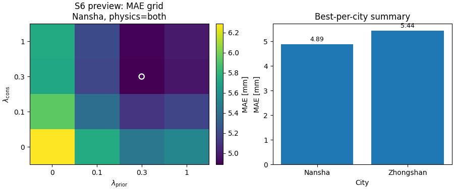

Note
Go to the end to download the full example code.
Build ablation tables from sensitivity records#
This example teaches you how to use GeoPrior’s
build-ablation-table utility.
Unlike the figure-generation scripts, this command does not start from a plotting function. It starts from raw or semi-processed ablation records and turns them into tidy, reusable analysis tables.
Why this matters#
Ablation experiments are only useful if their outputs can be compared, filtered, exported, and reused downstream.
This builder helps turn a folder of
ablation_record*.jsonl files into:
one tidy ablation table,
one optional best-per-city table,
optional grouped S6 lambda grids,
optional grouped S7 toggle summaries.
That makes it a strong first lesson for the
tables_and_summaries section.
Imports#
We call the real production entrypoint from the project code. Then we read the generated tables back in and build one compact visual preview for the lesson page.
from __future__ import annotations
import json
import tempfile
from pathlib import Path
import matplotlib.pyplot as plt
import numpy as np
import pandas as pd
from geoprior._scripts.build_ablation_table import (
build_ablation_table_main,
)
Build a compact synthetic ablation study#
The real script expects ablation records such as
ablation_record*.jsonl. Each record is a dictionary with
run metadata and metrics.
For the lesson, we create a small synthetic study with:
two cities,
two physics buckets,
a lambda_prior × lambda_cons grid,
overall metrics,
and per-horizon metrics.
We also include the toggle-style fields used by the script’s S7 grouped summary logic:
lambda_smooth
lambda_bounds
lambda_mv
lambda_q
use_effective_h
kappa_mode
hd_factor
lambda_prior_vals = [0.0, 0.1, 0.3, 1.0]
lambda_cons_vals = [0.0, 0.1, 0.3, 1.0]
rows: list[dict[str, object]] = []
counter = 0
for city in ["Nansha", "Zhongshan"]:
city_shift = 0.0 if city == "Nansha" else 0.55
for pde_mode in ["both", "none"]:
phys_penalty = 0.0 if pde_mode == "both" else 1.25
for lp in lambda_prior_vals:
for lc in lambda_cons_vals:
counter += 1
log_lp = np.log10(lp + 0.12)
log_lc = np.log10(lc + 0.12)
mae = (
4.8
+ city_shift
+ phys_penalty
+ 1.8 * (log_lp + 0.22) ** 2
+ 1.1 * (log_lc + 0.18) ** 2
)
rmse = mae * 1.18
mse = rmse**2
epsilon_prior = (
0.26
+ 0.04 * city_shift
+ 0.08 * (log_lp + 0.22) ** 2
+ 0.03 * (log_lc + 0.10) ** 2
+ 0.08 * (pde_mode == "none")
)
epsilon_cons = (
0.22
+ 0.04 * city_shift
+ 0.03 * (log_lp + 0.08) ** 2
+ 0.09 * (log_lc + 0.25) ** 2
+ 0.08 * (pde_mode == "none")
)
coverage80 = np.clip(
0.95
- 0.08 * epsilon_prior
- 0.06 * epsilon_cons,
0.65,
0.98,
)
sharpness80 = (
15.0
+ 3.5 * (log_lp + 0.18) ** 2
+ 5.5 * (log_lc + 0.25) ** 2
+ 1.0 * (pde_mode == "none")
)
r2 = np.clip(
0.95
- 0.050 * mae
- 0.004 * sharpness80,
0.10,
0.96,
)
use_effective_h = bool(
city == "Zhongshan" or lp >= 0.3
)
hd_factor = 0.6 if use_effective_h else 1.0
kappa_mode = "bar" if city == "Nansha" else "kb"
row = {
"timestamp": (
f"2026-03-28T12:{counter:02d}:00"
),
"city": city,
"model": "GeoPriorSubsNet",
"pde_mode": pde_mode,
"use_effective_h": use_effective_h,
"kappa_mode": kappa_mode,
"hd_factor": float(hd_factor),
"lambda_prior": float(lp),
"lambda_cons": float(lc),
"lambda_gw": (
0.20 if pde_mode == "both" else 0.0
),
"lambda_smooth": 0.40 if lp >= 0.3 else 0.0,
"lambda_mv": 0.08 if lp >= 0.1 else 0.0,
"lambda_bounds": 0.05 if lc >= 0.1 else 0.0,
"lambda_q": 0.03 if lc >= 0.3 else 0.0,
"mae": float(mae),
"rmse": float(rmse),
"mse": float(mse),
"r2": float(r2),
"coverage80": float(coverage80),
"sharpness80": float(sharpness80),
"epsilon_prior": float(epsilon_prior),
"epsilon_cons": float(epsilon_cons),
"units": {"subs_metrics_unit": "mm"},
"per_horizon_mae": {
"H1": float(mae * 0.86),
"H2": float(mae),
"H3": float(mae * 1.15),
},
"per_horizon_r2": {
"H1": float(min(0.99, r2 + 0.04)),
"H2": float(r2),
"H3": float(max(0.0, r2 - 0.05)),
},
}
rows.append(row)
print(f"Number of synthetic records: {len(rows)}")
print("")
print("Example record")
print(json.dumps(rows[0], indent=2))
Number of synthetic records: 64
Example record
{
"timestamp": "2026-03-28T12:01:00",
"city": "Nansha",
"model": "GeoPriorSubsNet",
"pde_mode": "both",
"use_effective_h": false,
"kappa_mode": "bar",
"hd_factor": 1.0,
"lambda_prior": 0.0,
"lambda_cons": 0.0,
"lambda_gw": 0.2,
"lambda_smooth": 0.0,
"lambda_mv": 0.0,
"lambda_bounds": 0.0,
"lambda_q": 0.0,
"mae": 6.287758135432752,
"rmse": 7.419554599810647,
"mse": 55.049790459571334,
"r2": 0.5580287676470639,
"coverage80": 0.9075371302077502,
"sharpness80": 19.395831395324617,
"epsilon_prior": 0.31950405687650674,
"epsilon_cons": 0.2817090873688203,
"units": {
"subs_metrics_unit": "mm"
},
"per_horizon_mae": {
"H1": 5.407471996472167,
"H2": 6.287758135432752,
"H3": 7.230921855747664
},
"per_horizon_r2": {
"H1": 0.5980287676470639,
"H2": 0.5580287676470639,
"H3": 0.5080287676470638
}
}
Write the synthetic JSONL file#
The production command reads ablation records from files, so we follow that same workflow here.
tmp_dir = Path(
tempfile.mkdtemp(prefix="gp_sg_ablation_table_")
)
jsonl_path = tmp_dir / "ablation_record.synthetic.jsonl"
with jsonl_path.open("w", encoding="utf-8") as f:
for rec in rows:
f.write(json.dumps(rec) + "\n")
print("")
print(f"Input JSONL written to: {jsonl_path}")
Input JSONL written to: C:\Users\Daniel\AppData\Local\Temp\gp_sg_ablation_table_nx79em76\ablation_record.synthetic.jsonl
Run the real ablation-table builder#
We ask the script to produce:
the main tidy table,
a best-per-city table,
grouped S6 lambda grids,
and an S7 grouped toggle summary.
We keep the output in CSV/JSON/TXT form for the lesson page.
out_stem = "ablation_table_gallery"
build_ablation_table_main(
[
"--input",
str(jsonl_path),
"--out-dir",
str(tmp_dir),
"--out",
out_stem,
"--formats",
"csv,json,txt",
"--sort-by",
"mae",
"--ascending",
"auto",
"--metric-unit",
"mm",
"--keep-per-horizon",
"true",
"--best-per-city",
"--group-cols",
"s6,s7",
"--s6-metrics",
"mae,coverage80,sharpness80",
"--s7-metrics",
"mae,coverage80,sharpness80",
"--s7-agg",
"mean",
],
prog="build-ablation-table",
)
[OK] csv -> C:\Users\Daniel\AppData\Local\Temp\gp_sg_ablation_table_nx79em76\ablation_table_gallery.csv
[OK] json -> C:\Users\Daniel\AppData\Local\Temp\gp_sg_ablation_table_nx79em76\ablation_table_gallery.json
[OK] txt -> C:\Users\Daniel\AppData\Local\Temp\gp_sg_ablation_table_nx79em76\ablation_table_gallery.txt
[OK] best/city -> C:\Users\Daniel\AppData\Local\Temp\gp_sg_ablation_table_nx79em76\ablation_table_gallery__best_per_city.csv
[OK] csv -> C:\Users\Daniel\AppData\Local\Temp\gp_sg_ablation_table_nx79em76\ablation_table_gallery__S6__mae__Nansha__both.csv
[OK] json -> C:\Users\Daniel\AppData\Local\Temp\gp_sg_ablation_table_nx79em76\ablation_table_gallery__S6__mae__Nansha__both.json
[OK] txt -> C:\Users\Daniel\AppData\Local\Temp\gp_sg_ablation_table_nx79em76\ablation_table_gallery__S6__mae__Nansha__both.txt
[OK] csv -> C:\Users\Daniel\AppData\Local\Temp\gp_sg_ablation_table_nx79em76\ablation_table_gallery__S6__coverage80__Nansha__both.csv
[OK] json -> C:\Users\Daniel\AppData\Local\Temp\gp_sg_ablation_table_nx79em76\ablation_table_gallery__S6__coverage80__Nansha__both.json
[OK] txt -> C:\Users\Daniel\AppData\Local\Temp\gp_sg_ablation_table_nx79em76\ablation_table_gallery__S6__coverage80__Nansha__both.txt
[OK] csv -> C:\Users\Daniel\AppData\Local\Temp\gp_sg_ablation_table_nx79em76\ablation_table_gallery__S6__sharpness80__Nansha__both.csv
[OK] json -> C:\Users\Daniel\AppData\Local\Temp\gp_sg_ablation_table_nx79em76\ablation_table_gallery__S6__sharpness80__Nansha__both.json
[OK] txt -> C:\Users\Daniel\AppData\Local\Temp\gp_sg_ablation_table_nx79em76\ablation_table_gallery__S6__sharpness80__Nansha__both.txt
[OK] csv -> C:\Users\Daniel\AppData\Local\Temp\gp_sg_ablation_table_nx79em76\ablation_table_gallery__S6__mae__Nansha__none.csv
[OK] json -> C:\Users\Daniel\AppData\Local\Temp\gp_sg_ablation_table_nx79em76\ablation_table_gallery__S6__mae__Nansha__none.json
[OK] txt -> C:\Users\Daniel\AppData\Local\Temp\gp_sg_ablation_table_nx79em76\ablation_table_gallery__S6__mae__Nansha__none.txt
[OK] csv -> C:\Users\Daniel\AppData\Local\Temp\gp_sg_ablation_table_nx79em76\ablation_table_gallery__S6__coverage80__Nansha__none.csv
[OK] json -> C:\Users\Daniel\AppData\Local\Temp\gp_sg_ablation_table_nx79em76\ablation_table_gallery__S6__coverage80__Nansha__none.json
[OK] txt -> C:\Users\Daniel\AppData\Local\Temp\gp_sg_ablation_table_nx79em76\ablation_table_gallery__S6__coverage80__Nansha__none.txt
[OK] csv -> C:\Users\Daniel\AppData\Local\Temp\gp_sg_ablation_table_nx79em76\ablation_table_gallery__S6__sharpness80__Nansha__none.csv
[OK] json -> C:\Users\Daniel\AppData\Local\Temp\gp_sg_ablation_table_nx79em76\ablation_table_gallery__S6__sharpness80__Nansha__none.json
[OK] txt -> C:\Users\Daniel\AppData\Local\Temp\gp_sg_ablation_table_nx79em76\ablation_table_gallery__S6__sharpness80__Nansha__none.txt
[OK] csv -> C:\Users\Daniel\AppData\Local\Temp\gp_sg_ablation_table_nx79em76\ablation_table_gallery__S6__mae__Zhongshan__both.csv
[OK] json -> C:\Users\Daniel\AppData\Local\Temp\gp_sg_ablation_table_nx79em76\ablation_table_gallery__S6__mae__Zhongshan__both.json
[OK] txt -> C:\Users\Daniel\AppData\Local\Temp\gp_sg_ablation_table_nx79em76\ablation_table_gallery__S6__mae__Zhongshan__both.txt
[OK] csv -> C:\Users\Daniel\AppData\Local\Temp\gp_sg_ablation_table_nx79em76\ablation_table_gallery__S6__coverage80__Zhongshan__both.csv
[OK] json -> C:\Users\Daniel\AppData\Local\Temp\gp_sg_ablation_table_nx79em76\ablation_table_gallery__S6__coverage80__Zhongshan__both.json
[OK] txt -> C:\Users\Daniel\AppData\Local\Temp\gp_sg_ablation_table_nx79em76\ablation_table_gallery__S6__coverage80__Zhongshan__both.txt
[OK] csv -> C:\Users\Daniel\AppData\Local\Temp\gp_sg_ablation_table_nx79em76\ablation_table_gallery__S6__sharpness80__Zhongshan__both.csv
[OK] json -> C:\Users\Daniel\AppData\Local\Temp\gp_sg_ablation_table_nx79em76\ablation_table_gallery__S6__sharpness80__Zhongshan__both.json
[OK] txt -> C:\Users\Daniel\AppData\Local\Temp\gp_sg_ablation_table_nx79em76\ablation_table_gallery__S6__sharpness80__Zhongshan__both.txt
[OK] csv -> C:\Users\Daniel\AppData\Local\Temp\gp_sg_ablation_table_nx79em76\ablation_table_gallery__S6__mae__Zhongshan__none.csv
[OK] json -> C:\Users\Daniel\AppData\Local\Temp\gp_sg_ablation_table_nx79em76\ablation_table_gallery__S6__mae__Zhongshan__none.json
[OK] txt -> C:\Users\Daniel\AppData\Local\Temp\gp_sg_ablation_table_nx79em76\ablation_table_gallery__S6__mae__Zhongshan__none.txt
[OK] csv -> C:\Users\Daniel\AppData\Local\Temp\gp_sg_ablation_table_nx79em76\ablation_table_gallery__S6__coverage80__Zhongshan__none.csv
[OK] json -> C:\Users\Daniel\AppData\Local\Temp\gp_sg_ablation_table_nx79em76\ablation_table_gallery__S6__coverage80__Zhongshan__none.json
[OK] txt -> C:\Users\Daniel\AppData\Local\Temp\gp_sg_ablation_table_nx79em76\ablation_table_gallery__S6__coverage80__Zhongshan__none.txt
[OK] csv -> C:\Users\Daniel\AppData\Local\Temp\gp_sg_ablation_table_nx79em76\ablation_table_gallery__S6__sharpness80__Zhongshan__none.csv
[OK] json -> C:\Users\Daniel\AppData\Local\Temp\gp_sg_ablation_table_nx79em76\ablation_table_gallery__S6__sharpness80__Zhongshan__none.json
[OK] txt -> C:\Users\Daniel\AppData\Local\Temp\gp_sg_ablation_table_nx79em76\ablation_table_gallery__S6__sharpness80__Zhongshan__none.txt
[OK] csv -> C:\Users\Daniel\AppData\Local\Temp\gp_sg_ablation_table_nx79em76\ablation_table_gallery__S7.csv
[OK] json -> C:\Users\Daniel\AppData\Local\Temp\gp_sg_ablation_table_nx79em76\ablation_table_gallery__S7.json
[OK] txt -> C:\Users\Daniel\AppData\Local\Temp\gp_sg_ablation_table_nx79em76\ablation_table_gallery__S7.txt
Inspect the produced files#
The command writes multiple outputs. For the lesson, we list the main ones so the user sees the artifact family clearly.
written = sorted(tmp_dir.glob("ablation_table_gallery*"))
print("")
print("Written files")
for p in written:
print(" -", p.name)
Written files
- ablation_table_gallery.csv
- ablation_table_gallery.json
- ablation_table_gallery.txt
- ablation_table_gallery__best_per_city.csv
- ablation_table_gallery__S6__coverage80__Nansha__both.csv
- ablation_table_gallery__S6__coverage80__Nansha__both.json
- ablation_table_gallery__S6__coverage80__Nansha__both.txt
- ablation_table_gallery__S6__coverage80__Nansha__none.csv
- ablation_table_gallery__S6__coverage80__Nansha__none.json
- ablation_table_gallery__S6__coverage80__Nansha__none.txt
- ablation_table_gallery__S6__coverage80__Zhongshan__both.csv
- ablation_table_gallery__S6__coverage80__Zhongshan__both.json
- ablation_table_gallery__S6__coverage80__Zhongshan__both.txt
- ablation_table_gallery__S6__coverage80__Zhongshan__none.csv
- ablation_table_gallery__S6__coverage80__Zhongshan__none.json
- ablation_table_gallery__S6__coverage80__Zhongshan__none.txt
- ablation_table_gallery__S6__mae__Nansha__both.csv
- ablation_table_gallery__S6__mae__Nansha__both.json
- ablation_table_gallery__S6__mae__Nansha__both.txt
- ablation_table_gallery__S6__mae__Nansha__none.csv
- ablation_table_gallery__S6__mae__Nansha__none.json
- ablation_table_gallery__S6__mae__Nansha__none.txt
- ablation_table_gallery__S6__mae__Zhongshan__both.csv
- ablation_table_gallery__S6__mae__Zhongshan__both.json
- ablation_table_gallery__S6__mae__Zhongshan__both.txt
- ablation_table_gallery__S6__mae__Zhongshan__none.csv
- ablation_table_gallery__S6__mae__Zhongshan__none.json
- ablation_table_gallery__S6__mae__Zhongshan__none.txt
- ablation_table_gallery__S6__sharpness80__Nansha__both.csv
- ablation_table_gallery__S6__sharpness80__Nansha__both.json
- ablation_table_gallery__S6__sharpness80__Nansha__both.txt
- ablation_table_gallery__S6__sharpness80__Nansha__none.csv
- ablation_table_gallery__S6__sharpness80__Nansha__none.json
- ablation_table_gallery__S6__sharpness80__Nansha__none.txt
- ablation_table_gallery__S6__sharpness80__Zhongshan__both.csv
- ablation_table_gallery__S6__sharpness80__Zhongshan__both.json
- ablation_table_gallery__S6__sharpness80__Zhongshan__both.txt
- ablation_table_gallery__S6__sharpness80__Zhongshan__none.csv
- ablation_table_gallery__S6__sharpness80__Zhongshan__none.json
- ablation_table_gallery__S6__sharpness80__Zhongshan__none.txt
- ablation_table_gallery__S7.csv
- ablation_table_gallery__S7.json
- ablation_table_gallery__S7.txt
Read the main table and the grouped outputs#
The main table is the tidy run-level export. S6 is the lambda grid summary. S7 is the grouped toggle summary. The best-per-city table is a very useful quick summary.
main_csv = tmp_dir / "ablation_table_gallery.csv"
best_csv = (
tmp_dir / "ablation_table_gallery__best_per_city.csv"
)
s6_csv = (
tmp_dir
/ "ablation_table_gallery__S6__mae__Nansha__both.csv"
)
s7_csv = tmp_dir / "ablation_table_gallery__S7.csv"
tab = pd.read_csv(main_csv)
best = pd.read_csv(best_csv)
s6 = pd.read_csv(s6_csv)
s7 = pd.read_csv(s7_csv)
print("")
print("Main tidy table")
print(tab.head(8).to_string(index=False))
print("")
print("Best per city")
print(best.to_string(index=False))
print("")
print("S7 grouped summary")
print(s7.head(12).to_string(index=False))
Main tidy table
timestamp city model pde_mode use_effective_h kappa_mode hd_factor lambda_cons lambda_gw lambda_prior lambda_smooth lambda_mv lambda_bounds lambda_q mae rmse mse r2 coverage80 sharpness80 epsilon_prior epsilon_cons per_horizon_mae.H1 per_horizon_mae.H2 per_horizon_mae.H3 per_horizon_r2.H1 per_horizon_r2.H2 per_horizon_r2.H3
2026-03-28T12:11:00 Nansha GeoPriorSubsNet both True bar 0.6 0.3 0.2 0.3 0.4 0.08 0.05 0.03 4.886809 5.766435 33.251773 0.644764 0.915414 15.223850 0.264263 0.224088 4.202656 4.886809 5.619831 0.684764 0.644764 0.594764
2026-03-28T12:12:00 Nansha GeoPriorSubsNet both True bar 0.6 1.0 0.2 0.3 0.4 0.08 0.05 0.03 4.902022 5.784386 33.459126 0.642387 0.915147 15.627911 0.262634 0.230700 4.215739 4.902022 5.637326 0.682387 0.642387 0.592387
2026-03-28T12:15:00 Nansha GeoPriorSubsNet both True bar 0.6 0.3 0.2 1.0 0.4 0.08 0.05 0.03 4.973043 5.868191 34.435662 0.640259 0.915236 15.272255 0.268096 0.221947 4.276817 4.973043 5.718999 0.680259 0.640259 0.590259
2026-03-28T12:16:00 Nansha GeoPriorSubsNet both True bar 0.6 1.0 0.2 1.0 0.4 0.08 0.05 0.03 4.988256 5.886142 34.646669 0.637882 0.914969 15.676316 0.266466 0.228559 4.289900 4.988256 5.736494 0.677882 0.637882 0.587882
2026-03-28T12:10:00 Nansha GeoPriorSubsNet both True bar 0.6 0.1 0.2 0.3 0.4 0.08 0.05 0.00 5.095116 6.012236 36.146985 0.631048 0.914041 16.049144 0.271292 0.237593 4.381799 5.095116 5.859383 0.671048 0.631048 0.581048
2026-03-28T12:14:00 Nansha GeoPriorSubsNet both True bar 0.6 0.1 0.2 1.0 0.4 0.08 0.05 0.00 5.181349 6.113992 37.380898 0.626542 0.913863 16.097549 0.275125 0.235452 4.455960 5.181349 5.958551 0.666542 0.626542 0.576542
2026-03-28T12:07:00 Nansha GeoPriorSubsNet both False bar 1.0 0.3 0.2 0.1 0.0 0.08 0.05 0.03 5.187235 6.120937 37.465873 0.627092 0.913904 15.886642 0.277616 0.231454 4.461022 5.187235 5.965320 0.667092 0.627092 0.577092
2026-03-28T12:08:00 Nansha GeoPriorSubsNet both False bar 1.0 1.0 0.2 0.1 0.0 0.08 0.05 0.03 5.202448 6.138889 37.685954 0.624715 0.913637 16.290703 0.275986 0.238066 4.474105 5.202448 5.982815 0.664715 0.624715 0.574715
Best per city
timestamp city model pde_mode use_effective_h kappa_mode hd_factor lambda_cons lambda_gw lambda_prior lambda_smooth lambda_mv lambda_bounds lambda_q mae rmse mse r2 coverage80 sharpness80 epsilon_prior epsilon_cons per_horizon_mae.H1 per_horizon_mae.H2 per_horizon_mae.H3 per_horizon_r2.H1 per_horizon_r2.H2 per_horizon_r2.H3
2026-03-28T12:11:00 Nansha GeoPriorSubsNet both True bar 0.6 0.3 0.2 0.3 0.4 0.08 0.05 0.03 4.886809 5.766435 33.251773 0.644764 0.915414 15.22385 0.264263 0.224088 4.202656 4.886809 5.619831 0.684764 0.644764 0.594764
2026-03-28T12:43:00 Zhongshan GeoPriorSubsNet both True kb 0.6 0.3 0.2 0.3 0.4 0.08 0.05 0.03 5.436809 6.415435 41.157806 0.617264 0.912334 15.22385 0.286263 0.246088 4.675656 5.436809 6.252331 0.657264 0.617264 0.567264
S7 grouped summary
city pde_bucket use_effective_h kappa_mode hd_factor smooth_on bounds_on mv_on q_on n mae coverage80 sharpness80
Nansha both False bar 1.0 off off off off 1 6.287758 0.907537 19.395831
Nansha both False bar 1.0 off off on off 1 5.748347 0.910127 18.273268
Nansha both False bar 1.0 off on off off 1 5.934953 0.909941 17.834499
Nansha both False bar 1.0 off on off on 2 5.734253 0.911180 17.211236
Nansha both False bar 1.0 off on on off 1 5.395541 0.912531 16.711936
Nansha both False bar 1.0 off on on on 2 5.194841 0.913770 16.088673
Nansha both True bar 0.6 on off on off 2 5.491038 0.911548 17.634678
Nansha both True bar 0.6 on on on off 2 5.138232 0.913952 16.073347
Nansha both True bar 0.6 on on on on 4 4.937533 0.915191 15.450083
Nansha none False bar 1.0 off off off off 1 7.537758 0.896337 20.395831
Nansha none False bar 1.0 off off on off 1 6.998347 0.898927 19.273268
Nansha none False bar 1.0 off on off off 1 7.184953 0.898741 18.834499
Build one compact visual preview from the generated tables#
This is not part of the production builder itself. It is a teaching aid for the gallery page.
- Left:
an S6 heatmap for MAE in Nansha with physics on.
- Right:
the best-per-city MAE summary.
# Rebuild the S6 matrix from the flat CSV.
lcons = pd.to_numeric(
s6.iloc[:, 0], errors="coerce"
).to_numpy()
lpris = np.array([float(c) for c in s6.columns[1:]])
heat = s6.iloc[:, 1:].to_numpy(dtype=float)
fig, axes = plt.subplots(
1,
2,
figsize=(9.0, 3.8),
constrained_layout=True,
)
# S6 heatmap
ax = axes[0]
im = ax.imshow(
heat,
origin="lower",
aspect="auto",
)
ax.set_title("S6 preview: MAE grid\nNansha, physics=both")
ax.set_xlabel(r"$\lambda_{\mathrm{prior}}$")
ax.set_ylabel(r"$\lambda_{\mathrm{cons}}$")
ax.set_xticks(np.arange(len(lpris)))
ax.set_yticks(np.arange(len(lcons)))
ax.set_xticklabels([f"{x:g}" for x in lpris])
ax.set_yticklabels([f"{x:g}" for x in lcons])
# Mark the best cell.
i_best, j_best = np.unravel_index(
np.nanargmin(heat),
heat.shape,
)
ax.scatter(
[j_best],
[i_best],
marker="o",
s=55,
facecolors="none",
edgecolors="white",
linewidths=1.6,
)
cbar = fig.colorbar(im, ax=ax, fraction=0.046, pad=0.04)
cbar.set_label("MAE [mm]")
# Best-per-city bar chart
ax = axes[1]
ax.bar(best["city"], best["mae"])
ax.set_title("Best-per-city summary")
ax.set_ylabel("MAE [mm]")
ax.set_xlabel("City")
for i, v in enumerate(best["mae"].to_numpy(float)):
ax.text(
i,
v + 0.06,
f"{v:.2f}",
ha="center",
va="bottom",
fontsize=9,
)

Learn how to read the main table#
The main tidy table is the run-level table.
A useful reading order is:
identify the configuration columns such as city, pde_mode, lambda weights, and identifiability settings;
read the main metrics such as MAE, RMSE, R2, coverage80, and sharpness80;
use the per-horizon columns only when you need to inspect how performance drifts across forecast steps.
In other words:
the main table is the tidy archive,
the grouped tables are the paper-style summaries.
Learn how to read the S6 table#
The S6 output is the lambda-grid summary.
For each city and each physics bucket, the script pivots one metric onto:
rows = lambda_cons
cols = lambda_prior
This is extremely useful because it converts a long run table into a sensitivity surface that can later be:
plotted as a heatmap,
exported to TeX,
or inspected directly in CSV form.
In the preview heatmap above, the white ring marks the best MAE cell in the Nansha + physics-on grid.
Learn how to read the S7 table#
The S7 output is the toggle summary.
Instead of summarizing individual runs, it groups runs by higher-level settings such as:
city,
pde bucket,
use_effective_h,
kappa_mode,
smooth_on,
bounds_on,
mv_on,
q_on.
Then it computes group means and group sizes.
This is useful when the reader is not asking:
“Which exact lambda pair won?”
but instead:
“Do runs with bounds or smoothness tend to behave better on average?”
Why this builder is useful in practice#
This script is a strong bridge between raw experiment logs and later analysis pages.
It helps with three different kinds of work:
quick filtering and ranking of runs,
paper-style grouped summaries,
and downstream figure generation such as S6 sensitivity maps.
That is why it belongs naturally in the
tables_and_summaries gallery rather than in
figure_generation.
Practical takeaway#
A good workflow for ablations is:
run the sensitivity or ablation jobs,
build the tidy ablation table,
inspect best-per-city rows,
inspect S6 lambda grids,
inspect S7 grouped toggle summaries,
only then move on to paper-ready plots.
This order helps separate:
data collection,
tabulation,
and visualization.
Command-line version#
The same lesson can be reproduced from the CLI.
Legacy dispatcher:
python -m scripts build-ablation-table \
--root results \
--out table_ablations \
--formats csv,json,txt \
--best-per-city \
--group-cols s6,s7
Paper-friendly TeX export:
python -m scripts build-ablation-table \
--root results \
--for-paper \
--err-metric rmse \
--keep-r2 \
--formats csv,tex \
--out table_ablations_paper
Modern CLI:
geoprior build ablation-table \
--root results \
--out table_ablations \
--group-cols s6,s7
The gallery page teaches the builder. The command line reproduces it in a workflow.
Total running time of the script: (0 minutes 1.819 seconds)